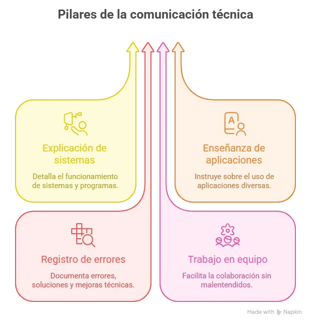
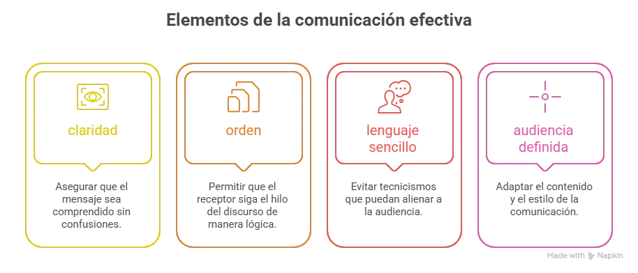
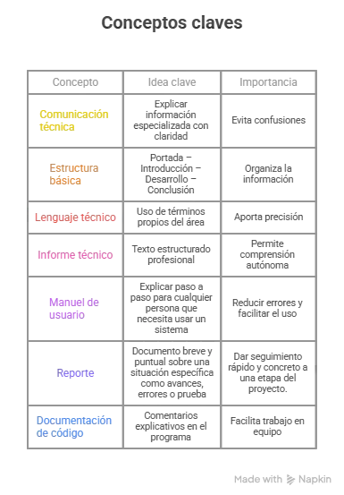

Comunicación técnica y estructuración de documentos técnicos
Esta asignatura te ayudará a desarrollar una habilidad esencial para tu formación como técnico profesional en programación web: la capacidad de comunicar claramente lo que haces en tecnología.
En el mundo real, los programadores no solo escriben códigos. También deben explicar proyectos, documentar aplicaciones, redactar informes, crear manuales y trabajar en equipo. Una buena comunicación técnica evita errores, facilita el trabajo colaborativo y hace que otras personas entiendan y usen correctamente las soluciones tecnológicas.
Objetivos del aprendizaje
- ✓ 🔍 Identificar los diferentes tipos de comunicación técnica —informes, manuales, reportes y documentación de código— distinguiendo sus características esenciales y finalidades dentro de contextos profesionales y académicos.
- ✓ ✍️ Comparar la estructura, el propósito y el formato de los distintos tipos de documentos técnicos, estableciendo criterios claros de diferenciación entre informes, manuales, reportes y documentación de código.
- ✓ 📋 Producir documentos técnicos básicos de cada tipo —informe, manual, reporte y documentación de código— aplicando las convenciones propias de cada formato de manera correcta y coherente.
- ✓ 🗂️ Seleccionar el tipo de comunicación técnica más adecuado según la situación, la audiencia y el propósito comunicativo, justificando la elección con base en los criterios estudiado
¿Qué es la comunicación técnica?
La comunicación técnica es la forma de transmitir información especializada (tecnológica o científica) de manera clara, precisa y útil, pensando siempre en quién va a leerla. Su objetivo no es impresionar, sino hacer entender.

✍️ Ejemplo
Si creas una página web para registrar notas escolares, necesitas explicar:
• Cómo usarla (manual de usuario).
• Cómo está construida (documentación de código).
Estructura y formato de documentos técnicos.
Todos estos documentos tienen un mismo objetivo: que cualquier persona pueda entender la información sin necesidad de que el autor esté presente.
Un documento técnico debe ser ordenado, claro y visualmente comprensible. Una estructura básica es:
Tabla 1. ¿Qué va en cada parte?
| Parte | Contenido |
|---|---|
| Portada | Nombre del documento y autor |
| Introducción | Objetivo del documento |
| Desarrollo | Explicación paso a paso |
| Conclusión | Qué se logró o recomendaciones |
📊 Esquema conceptual:

Tipos de comunicación técnica en programación web
Tabla 2. En el entorno tecnológico se utilizan diferentes documentos técnicos, según la necesidad:
| Tipo de documento | ¿Para qué sirve? | Ejemplo en programación web |
|---|---|---|
| Informe técnico | Explica un proceso, problema y resultados | Informe de un proyecto web escolar |
| Manual de usuario | Enseña a usar una aplicación paso a paso | Manual de uso de una página web |
| Reporte | Muestra avances, errores o pruebas | Reporte de errores (bugs) |
| Documentación de código | Explica qué hace el código | Comentarios en HTML, CSS o JavaScript |
1️⃣Informe técnico
Un informe técnico es un documento formal que explica:
Qué se hizo.
Cómo se hizo.
Qué resultados se obtuvieron.
Qué conclusiones se pueden sacar.
Se usa para presentar resultados de proyectos o análisis técnicos.
✍️ 💻 Ejemplo
Título: Informe técnico del desarrollo de un formulario web
Fragmento ejemplo:
Este informe describe el desarrollo de un formulario web utilizando HTML y CSS. El objetivo fue permitir el registro de usuarios mediante la captura de nombre y correo electrónico. Durante las pruebas se verificó el correcto envío de datos al servidor.
👉 Aquí se explica el proceso de forma ordenada y técnica.
2️⃣Manual de usuario
Un manual de usuario es un documento que explica paso a paso cómo utilizar una aplicación o sistema.
Está dirigido a personas que NO necesariamente saben programar.
Su objetivo es:
Enseñar a usar el sistema.
Evitar errores.
Guiar al usuario.
✍️ 💻 Ejemplo aplicado
Manual de Usuario – Sistema de Registro Web
Paso 1: ingrese a la página principal.
Paso 2: complete los campos nombre y correo electrónico.
Paso 3: presione el botón “Enviar”.
Paso 4: verifique el mensaje de confirmación.
👉 Aquí no se explica código, sino cómo usar el sistema.
3️⃣Reporte
Un reporte es un documento más breve que informa sobre una situación específica.
Puede tratar sobre:
Avances de un proyecto
Errores encontrados (bugs)
Resultados de pruebas
Actividades realizadas
Es más corto que un informe técnico y más puntual.
Tabla 3. Tipos de reportes en programación web
| Tipo de reporte | ¿Qué informa? |
|---|---|
| Reporte de avance | Qué parte del proyecto está terminada |
| Reporte de errores | Problemas encontrados en la web |
| Reporte de pruebas | Resultados al probar el sistema |
✍️ 💻 Ejemplo
Reporte de error
Se identificó que el formulario no valida correctamente el campo de correo electrónico. El sistema permite ingresar datos sin el símbolo @. Se recomienda implementar validación con JavaScript.
👉 Es claro, breve y directo.
4️⃣Documentación de código
Documentar el código significa explicar con palabras qué hace cada parte del programa, usando comentarios claros.
✍️ Ejemplo
Ejemplo:<!-- Botón que envía el formulario -->
<button>Enviar</button>
✔ Comentario claro
✖ Código sin explicación
La documentación de código ayuda a:
Recordar qué hace tu programa.
Que otros compañeros lo entiendan.
Evitar errores en el futuro.

✍️ A) Reconociendo documentos técnicos:
• Observa una aplicación, tutorial o página web.
• Identifica qué tipo de documento técnico representa.
Producto: tabla con mínimo 3 ejemplos
✍️ B) Crea tu mini manual de usuario:
• Elige una aplicación sencilla (calculadora, formulario, página web de la Universidad).
• Elabora un manual de 1 página con pasos claros.
Producto: documento digital.
✍️ C) Elige una de las siguientes opciones:
- Un formulario web sencillo
- Una calculadora online
- Una aplicación básica que uses
Producto: manual que incluya: título, introducción, tres pasos claros y numerados, recomendación final. El documento debe estar redactado con claridad.
✍️ D) Un compañero escribió a siguiente explicación sobre un formulario web:
“El formulario guarda datos y es bueno. Tiene un botón y funciona bien”
Reescribe el texto teniendo en cuenta que debes usar un lenguaje técnico básico, explica claramente lo que hace el formulario
Producto: texto en línea en plataforma
Evaluación
Comprueba lo que has aprendido. Selecciona la respuesta correcta para cada pregunta.
Evaluación
1. Un estudiante redacta un documento técnico con el siguiente orden: 1. Desarrollo 2. Conclusión 3. Introducción 4. Portada. ¿Cuál es el principal problema del documento?
2. Un estudiante escribe: “El botón guarda la información en internet.” ¿Cuál opción mejora la precisión técnica?
3. Lee el siguiente fragmento: “El formulario tiene un botón. HTML es un lenguaje. Los datos se guardan.” ¿Cuál es el principal problema del texto?
4. Un manual de usuario tiene como objetivo principal:
5. Si un equipo de desarrollo no documenta correctamente su proyecto, es más probable que:
Recursos para Profundizar
Para ampliar tu conocimiento sobre la comunicación técnica y su tipología, te invitamos a explorar los siguientes enlaces y documentos:
-
Vídeo: ¿Qué sabes sobre comunicación técnica?
Ir al recurso
- ✓ Google Developers. (2024). Technical writing resources. https://developers.google.com/tech-writing/resources.
- ✓ InvGate. (2024). Documentación técnica: mejores prácticas y ejemplos. https://blog.invgate.com/es/documentacion-tecnica
- ✓ Last, S. (2017). Technical writing essentials. BCcampus. https://pressbooks.bccampus.ca/technicalwriting/
- ✓ Reardon, T., Powell, T., Arnett, J., Logan, M., & Race, C. (s.f.). Tipos de informes técnicos. LibreTexts. https://espanol.libretexts.org/